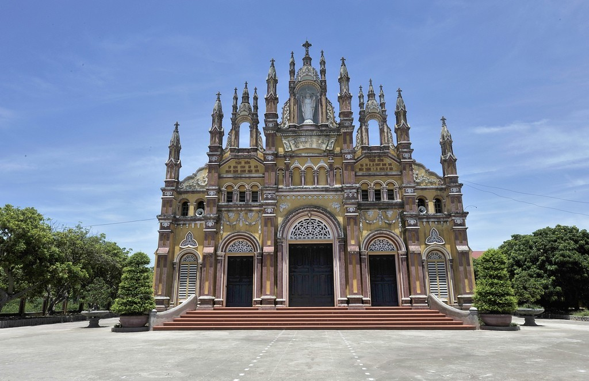
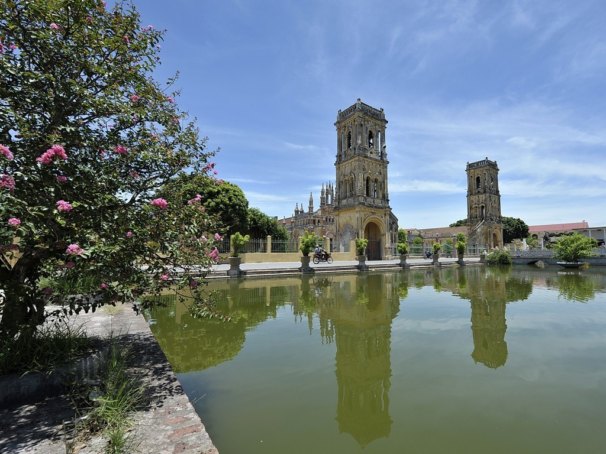

Nhà thờ Trung Linh Nam Định
Nhà thờ Giáo xứ Trung Linh thuộc Giáo phận Bùi Chu, được xây dựng năm 1928, nằm cách Toà Giám mục Bùi Chu khoảng 1,5km. Giáo phận Bùi Chu là giáo phận Công giáo Roma tại Việt Nam, có nhiều xứ đạo lâu đời và gắn liền với nhiều sự kiện quan trọng liên quan đến lịch sử hình thành và phát triển của Công giáo tại Việt Nam. Tuy là giáo phận có diện tích nhỏ nhất ở Việt Nam nhưng giáo phận Bùi Chu có số lượng cũng như mật độ giáo dân khá cao so với các địa phương khác.
Giáo xứ Trung Linh có lịch sử hình thành và phát triển từ rất lâu, khi Tin Mừng mới được loan báo trên quê hương Việt Nam. Theo tài liệu Cha Chính Thập (Joan de Sancta Crux) 1676, trong thư đệ trình Bề trên tại Manila Phi luật tân ngày 9 tháng 12 năm 1706, có kể về việc xứ Trung Linh bị quân quan vây khám bắt Ngài năm 1686 và dựa trên tài liệu này thì xứ Trung Linh đã có từ thế kỷ thứ mười bảy. Từ đó, giáo dân nơi đây mỗi ngày một thăng tiến, trở thành một trong những giáo xứ lớn sầm uất nhất của giáo phận Bùi Chu.
Trong khuôn viên nhà thờ có một ngôi nhà nguyện để làm nơi Chầu Thánh Thể Chúa, nhờ đó đã thôi thúc mọi thành phần trong giáo xứ cố gắng sống đạo với niềm tin vững vàng và lòng nhiệt thành vì Chúa và tha nhân. Ngoài ra, Nhà thờ còn có sự hiện diện và phục vụ của nhà Mẹ của Hội Dòng Mân Côi Bùi Chu, được Đức cha Đa Minh Hồ Ngọc Cẩn thành lập năm 1946, là Hội Dòng đầu tiên của Bùi Chu được thành lập theo giáo luật.